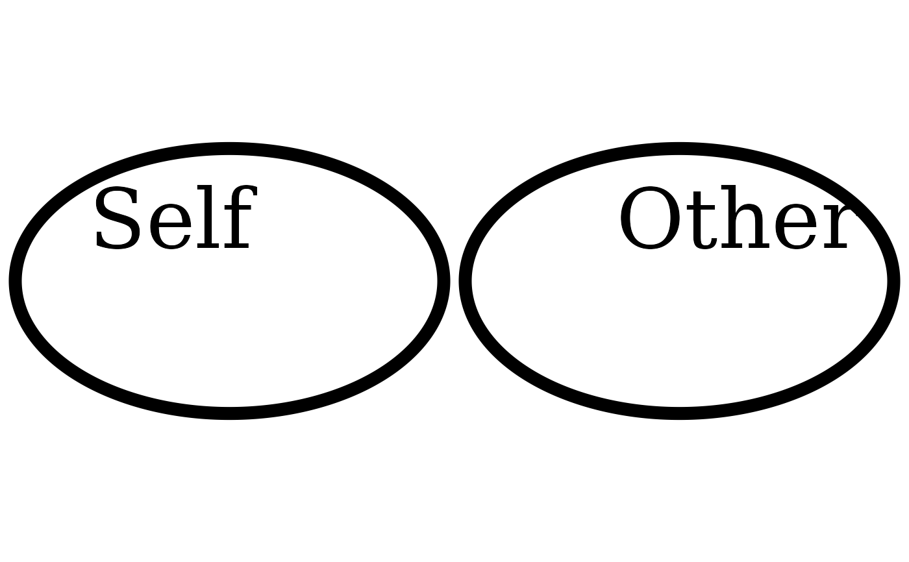
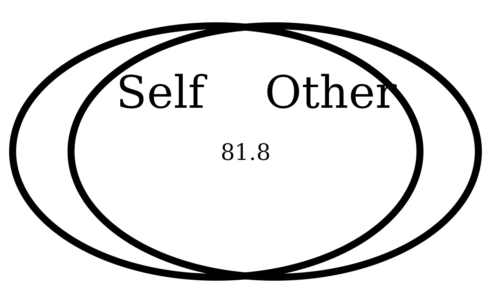
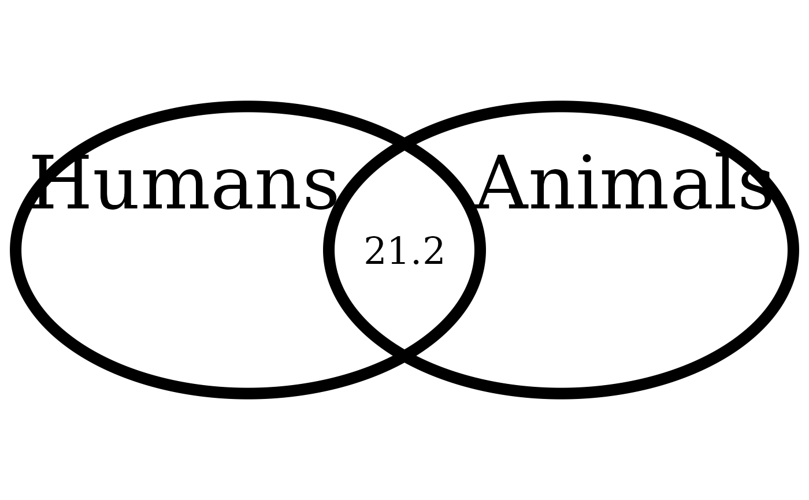
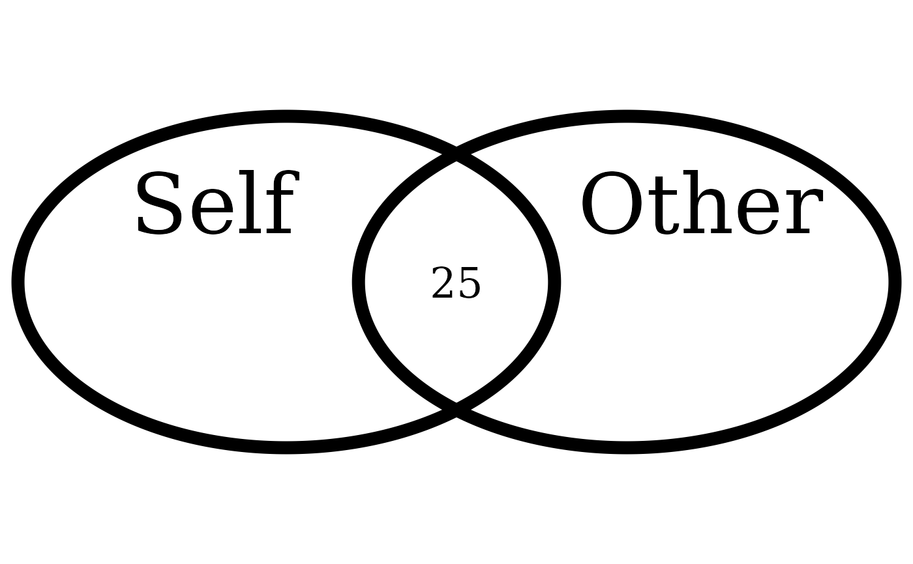
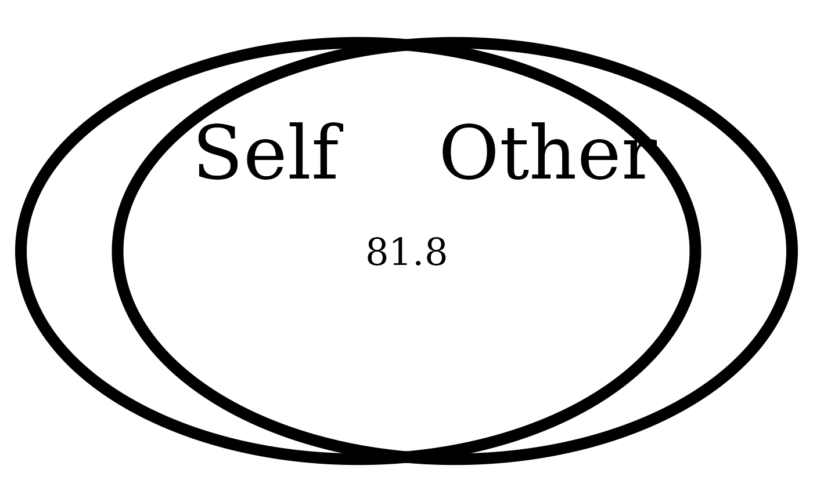
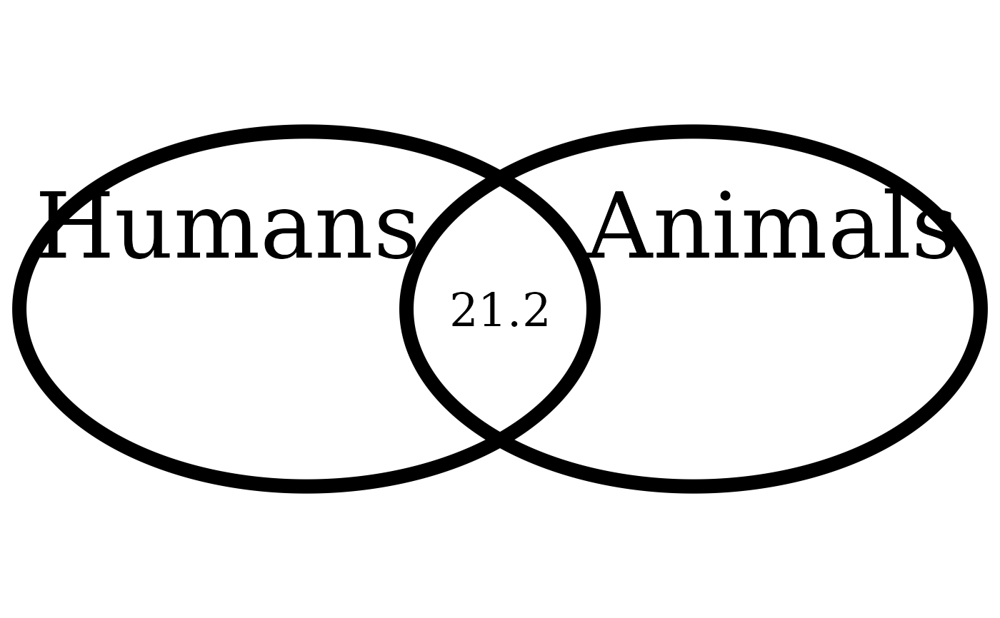
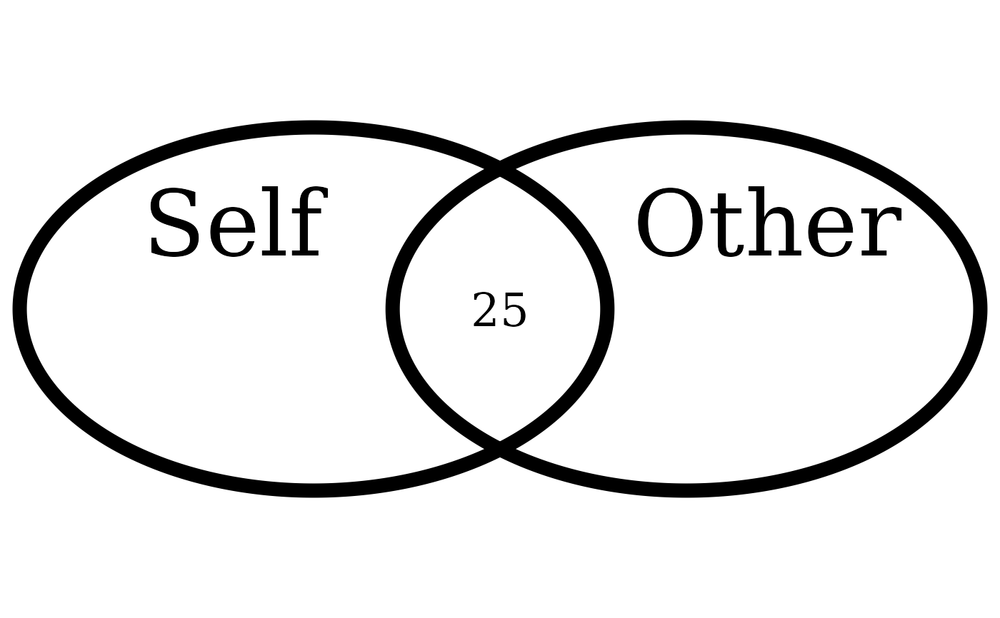

Interpolate the Inclusion of the Other in the Self Scale
Source:R/overlap_circle.R
overlap_circle.RdInterpolating the Inclusion of the Other in the Self Scale (IOS; self-other merging) easily. The user provides the IOS score, from 1 to 7, and the function will provide a percentage of actual area overlap between the two circles (i.e., not linear overlap), so it is possible to say, e.g., that experimental group 1 had an average overlap of X% with the other person, whereas experimental group 2 had an average overlap of X% with the other person.
Usage
overlap_circle(response, categories = c("Self", "Other"), scoring = "IOS")Arguments
- response
The variable to plot: requires IOS scores ranging from 1 to 7 (when
scoring = "IOS").- categories
The desired category names of the two overlapping circles for display on the plot.
- scoring
One of
c("IOS", "percentage", "direct"). Ifscoring = "IOS", response needs to be a value between 1 to 7. If set to"percentage"or"direct", responses need to be between 0 and 100. If set to"direct", must provide exactly three values that represent the area from the first circle, the middle overlapping area, and area from the second circle.
Details
The circles are generated through the
VennDiagram::draw.pairwise.venn() function and the desired
percentage overlap is passed to its cross.area argument
("The size of the intersection between the sets"). The percentage
overlap values are interpolated from this reference grid:
Score of 1 = 0%, 2 = 10%, 3 = 20%, 4 = 30%, 5 = 55%, 6 = 65%,
7 = 85%.
See also
Tutorial: https://rempsyc.remi-theriault.com/articles/circles
For a javascript web plugin of a continuous version of the Inclusion of Other in the Self (IOS) task (instead of the pen and paper version), for experiments during data collection, rather than data analysis, please see: https://github.com/jspsych/jspsych-contrib/tree/main/packages/plugin-ios
Examples
# Score of 1 (0% overlap)
overlap_circle(1)

# Score of 3.5 (25% overlap)
overlap_circle(3.5)
 # Score of 6.84 (81.8% overlap)
overlap_circle(6.84)

# Changing labels
overlap_circle(3.12, categories = c("Humans", "Animals"))

# \donttest{
# Saving to file (PDF or PNG)
plot <- overlap_circle(3.5)

ggplot2::ggsave(plot,
file = tempfile(fileext = ".pdf"), width = 7,
height = 7, unit = "in", dpi = 300
)
# Change for your own desired path
# }
# Score of 6.84 (81.8% overlap)
overlap_circle(6.84)

# Changing labels
overlap_circle(3.12, categories = c("Humans", "Animals"))

# \donttest{
# Saving to file (PDF or PNG)
plot <- overlap_circle(3.5)

ggplot2::ggsave(plot,
file = tempfile(fileext = ".pdf"), width = 7,
height = 7, unit = "in", dpi = 300
)
# Change for your own desired path
# }